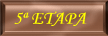

|
|||
 |
 |
||
|  | |||
|
|||
4º ETAPA ARZUA – ARCA DO PINO – 23 DE JUNIO/2.005
QUIZÁS ÉSTA ETAPA HA SIDO LA MÁS LIVIANA, DESPUES DEL BUEN DESCANSO QUE TUVIMOS, NOS LEVANTAMOS SOBRE LAS 6,30 H. Y COMENZAMOS A CAMINAR, YÁ DECIDIMOS DESAYUNAR DURANTE EL CAMINO Y TRAS VARIOS KM. UN LUGAREÑO SE CRUZA CON NOSOTROS Y NOS RECOMIENDA DESAYUNAR EN EL 2º BAR, Y MAS SI SOMOS ANDALUCES YA QUE HAY UN BANDERA DEL REAL BETIS EN DICHO LUGAR, MENUDA SORPRESA TENÍAMOS GUARDADA PARA NUESTRO CUÑADO EL SEVILLISTA

EL QUE NO CONOZCA ESTOS LUGARES, NO PODEIS IMAGINAROS, ENCONTRAR ALGO ASÍ POR ÉSTOS CAMINOS PERDIDOS, EN DONDE TE ENCUENTRAS UN BAR O POSADA CADA 6 KM. APROX. EN FIN ....
VOLVEMOS A ENCONTRARNOS CON EL GRUPO DE MADRID, CANARIAS Y AUSTRALIA DONDE PARAN A DESAYUNAR TAMBIEN.
SALIMOS DEL BAR Y NOS DISPUSIMOS A CAMINAR OTRA VEZ, CUANDO NOS DIMOS CUENTA ESTABAMOS EN ARCA DO PINO SOBRE LAS 11,15 H.

ALBERGUE TAMBIEN MUY BUENO, SEPARACIONES ENTRE CAMAS, Y NOS ALOJARON EN UNA, DONDE HABÍA UN TRAGALUZ DESDE DONDE SE VISLUMBRABA UN GRAN PAISAJE. DECIDIMOS HACER UNA COLADA DE ROPA Y UTILIZAR DESPUES LA SECADORA COSA QUE LA PRIMERA VEZ NO HICIMOS
MOMENTO DE RELAX EN LAS LITERAS, SUENA EL MOVIL Y MOMENTAZO DE EMOCIÓN MIENTRAS ESCUCHO A MI MUJER Y A MIS HIJAS, QUE TRAS CINCO DIAS SIN VERLAS ME PARECIERON 20, Y MÁS CUANDO EMPIEZA A DECIRME QUE HAN RECOGIDO LAS CALIFICACIONES FINALES DEL CURSO, TODO ESTUPENDO Y EL PROFESOR DE LA PATRI ESTABA CONTENTÍSIMO DE SU RENDIMIENTO ETC. ETC. NO PUDE CONTENERME (Hay cosas que no se pueden controlar) Y ME LLEVÉ COMO DIEZ MINUTOS LLORANDO DE EMOCION

VENGA VAMOS A COMER
QUEDAMOS PARA COMER Y NOS ATENDIÓ UN SEÑOR BASTANTE SERIO, NOS ASIGNA UNA MESA Y NOS SIRVE UNA GALLEGA MUCHO MAS AMABLE, UNA VEZ MÁS EL ALMUERZO FUÉ INOLVIDABLE QUE PEDAZOS DE PLATOS
¡OJU COMO SE COME AQUÍ EN GALICIA!. QUEDAMOS MUY SATISFECHOS.
VOLVIMOS AL ALBERGUE
SALIMOS POR LA TARDE AL PUEBLO, HABÍA CARTELES DONDE ANUNCIABAN UNA FIESTA Y “SARDIÑADA” GRATIS "POR LA NOCHE DE SAN JUAN", SOBRE LAS 21,30 NOS DIRIJIMOS A LA PLAZA Y HABÍA MONTADO UNAS LARGAS MESAS CON BARRILES DE VINO, AL FONDO UNA ESPECIE DE CHIRINGUITO DONDE ESTABAN PREPARANDO UNOS COSTILLARES DE CARNE, CHISTORRAS, ETC. Y UNA GRAN CANTIDAD DE SARDINAS QUE ESTABAN YÁ HACIENDOSE SOBRE LA PLANCHA. LA FIESTA PROMETÍA.

VARIOS PEREGRINOS SE HACÍAN NOTAR POR LA PLAZA. A LAS 22,30 H. EMPIEZAN A REPARTIR SARDINAS Y VASOS DE VINO,
NUESTROS AMIGOS TAMBIEN ESTAN ALLI, SE UNEN LOS GRUPOS, LA VAMOS A LIAR! PERO HAY UN PROBLEMA, SON LAS 22,45 EL ALBERGUE CIERRA A LAS 23:00 H. Y DESPUÉS NO ENTRA NADIE ¿QUÉ HACEMOS?

EMILIO, ENRIQUE, JULIAN, ERIKA Y LAS DOS AUSTRALIANAS, DECIDEN QUE VAN A POR SUS MOCHILAS Y CUANDO ACABE LA JUERGA SALEN CAMINANDO HACIA SANTIAGO DE COMPOSTELA, CON LINTERNAS SABIENDO QUE MAS DE LA MITAD DEL CAMINO SERÍA YÁ POR POLÍGONOS INDUSTRIALES Y LA CIUDAD DE SANTIAGO. AL FIN Y AL CABO ERA LA ÚLTIMA ETAPA.
NOSOTROS NOS ENCONTRAMOS CON UNA DIFÍCIL SITUACIÓN, LO HABLAMOS Y DOS DE LOS CINCO NO LES HACIA GRACIA LA IDEA, INCLUSO YA NÓ DE ANDAR POR LA NOCHE, SINO QUEDARNOS UNAS TRES HORAS POR EL PUEBLO HASTA COMENZAR A CAMINAR SOBRE LAS 5 ó 5:30 h. INSISTIMOS EN QUE DE TODAS FORMAS IBAN A SER UNAS TRES HORAS DE SUEÑO QUE MERECÍA LA PENA PERDERSELAS POR PASAR UN BUEN RATO, QUE PARA ESO TENÍAMOS LOS SACOS DE DORMIR Y ESTO ES LO QUE HAY QUE APROVECHAR DEL CAMINO, SEGUIAN PENSANDO EN LO MISMO DE QUEDARSE EN EL ALBERGUE, EN UN ÚLTIMO ESFUERZO FUIMOS A DIALOGAR CON EL HOSPITALERO BAJANDO OTRA VEZ AL ALBERGUE, NÓ LO ENCONTRAMOS Y LLEGAMOS DESILUSIONADOS A LA PLAZA, DE VUELTA LOS CINCO AL ALBERGUE, YA ESTABA ALLÍ ÉSTE HOMBRE Y DIJO QUE EL ALBERGUE QUEDARÍA CERRADO DESDE FUERA A LAS 23 H. SEGÚN NORMAS, AL PREGUNTARLE PARA SALIR TEMPRANO, NOS DIJO QUE SOLO TENDRIAMOS QUE EMPUJAR LA BARRA ANTIPÁNICO Y CERRAR, NÓ TENIAMOS TIEMPO PARA PENSAR EN MÁS SOLUCIONES Y SE NOS OCURRIÓ QUE SÍ HABÍA DOS QUE NO IBAN A PARARSE EN LA FIESTA QUE CUANDO DIÉRAMOS UN TOQUE AL MÓVIL, BAJARAN A ABRIR Y ENTRARÍAMOS TODOS ADENTRO. AL FINAL DE LOS DOS QUE SE IBAN A QUEDAR EN EL ALBERGUE, UNO SE APUNTA CON NOSOTROS Y EL OTRO SE SACRIFICA, DÁNDONOS LA OPORTUNIDAD DE LLAMARLE PARA QUE NOS ABRIERA.
DESPUES DE ÉSTA DIFICIL DECISIÓN, NOS FUIMOS PARA LA PLAZA Y NADA MAS LLEGAR, NOS HACEN UN RECIBIMIENTO EL OTRO GRUPO DE LO MAS SONADO. HACEMOS PIÑA Y COMENZAMOS A BEBER Y A COMER DE LO LINDO LA FIESTA SE ANIMA Y COMIENZA EL BAILE, TENEMOS EN EL GRUPO A UNA HÚNGARA CON UNA TAJÁ DEL QUINCE BAILANDO CUALQUIER RITMO CON PASES DE BALLET, NOS REIMOS DE LO LINDO, HACEMOS COROS Y BAILES EN RONDO, VIENE UNA CONGA Y HACEMOS UN TREN, LA GENTE SE ENTREGA POR COMPLETO, VIENE LAS RONDAS DE CUBATOIDES, LOS MÚSICOS SE LO CURRAN SUENAN DE MARAVILLA, VIENE EL DESMADRE CÁNTICOS DE MUSHO BETIS, MUSHA CANARIA, MUSHO MADRID, MUSHA AUSTRALIA, NOS CONVERTIMOS EN LOS REYES DE LA PISTA, EL MADRILES ES UN CRACK DEL BAILE, SUS SALTOS SON ESPECTACULARES, ATENCIÓN SE ACERCA UN PERSONAJE BAJITO, CON CARA ORONDA, BARBA, MOFLETES ROSADOS, MIRADA VACILONA MEJOR DICHO CON UN VACILÓN DEL QUINCE, UNA MEZCLA ENTRE SUPERMARIO BROSS Y PEPE GOTERA BORRACHO. Y EMPIEZA A MARCARSE UN PASITOS CORTOS ACOMPASADOS CON UN MOVIMIENTO DE MANOS ALTERNOS, ESTILO AÑOS 70, PERO A CAMARA LENTA, VÉ AL MADRILES E INTENTA SEGUIR SUS PASOS, NADA MAS ALARGAR UN POCO MÁS LA PIERNA, PIERDE EL EQUILIBRIO Y CASI SE CAE, LA ESTAMPA ES DESCOJONANTE EL MADRILES NO PUEDE MAS, DEJA DE BAILAR Y NO PARA DE REIRSE, EL COLEGA VACILÓN ES AGASAJADO UNA Y OTRA VEZ POR NOSOTROS, ANIMÁNDOLE A QUE BAILE. LA HÚNGARA SE PIERDE DE VISTA Y NÓ SABEMOS NADA MÁS DE ELLA. SEGUIMOS CON MAS CUBATAS. EN LA PLAZA PRÁCTICAMENTE SOLO QUEDAMOS NOSOTROS, EMPEZAMOS A CANTAR CON EL GRUPO, SE IDENTICA CON NOSOTROS Y NOSOTROS NOS IDENTIFICAMOS CON ELLOS CANTAMOS JUNTOS LA RIANCHEIRA, CANCIONES ACTUALES TELEVISIVAS, NOS DEDICA UNA DE MIGUEL RIOS “Bienvenidos”, OTRA MAS PARA LOS ANDALUCES; MEDINA AZAHARA “NECESITO RESPIRAR” EL DESMADRE ES TOTAL, ESTAMOS AFÓNICOS, EL GRUPO ACABA, NOSOTROS NO QUEREMOS QUE ACABE, ENPEZAMOS CON EL TIPICO OTRA, OTRA, NOS CANTA DOS MAS, ESTAMOS ABAJO DEL ESCENARIO, LOS SALUDAMOS LES DIMOS LA ENHORABUENA Y LA MUSICA SE ACABÓ.
ENTRA EN JUEGO OTRO PERSONAJE “JOSE MANUEL” HINCHA DEL ARCA DO PINO ENTABLA CONVERSACIÓN CON MI CUÑADO PACO “El sevillista” Y LE REGALA UNA BUFANDA QUE TIENE LOS COLORES ROJO Y BLANCO, ESTA VACILÓN TAMBIEN, ERA DE ESPERAR.
COMO LA NOCHE SE MERECÍA, HICIMOS NUESTRA PROPIA HOGUERA DE SAN JUAN, ZAPATILLAS ROTAS, ROPA, PAPELES, BARAJAS DE CARTAS Y TODO LO QUE NO NOS SERVÍA FUE AVIVANDO EL FUEGO, EMPEZAMOS A SALTAR POR ENCIMA DE EL, LA SINCRONIZACIÓN ES PERFECTA, LA FIESTA VA LLEGANDO A SU FIN. SEGUIMOS CON CÁNTICOS DE UNOS A OTROS, EL HERMANAMIENTO ES TOTAL, LOS INTEGRANTES DEL GRUPO DE MÚSICA ESTÁN PERPLEJOS, NOS ACERCAMOS A ELLOS Y ESTRECHAMOS NUESTRAS MANOS Y DIMOS SENDOS BESOS A LAS CANTANTES. JOSE MANUEL HINCHA DEL ARCO DO PINO SE OFRECE A INVITARNOS A UNA ÚLTIMA COPA, COSA QUE NO DESAPROVECHAMOS, NÓ SIN TENER DUDAS DE SU LIQUIDEZ PARA PAGAR LA CONVIDÁ Y DADO TAMBIEN SU ESTADO DE EUFORIA.
A EMILIO, NO LE HACE GRACIA, SE DISPONÍA A SALIR CAMINANDO YÁ, VÉ QUE SE ESTÁN ENROLLANDO MÁS DE LA CUENTA Y PUEDEN SUFRIR LOS EXCESOS, POR EL CAMINO.
NOSOTROS VAMOS AL DESTROSO Y TENÍAMOS LA BAZA DE PODER DORMIR ALGO EN EL ALBERGUE. ENTRE CHARLA Y CHARLA
VUELTA AL ALBERGUE, SON LAS 2,15 H. APROX., LLEGAMOS Y LA PUERTA COMO SE ESPERABA, ESTABA CERRADA, DECIDIMOS ESPERAR UN POCO POR SI ALGUN DESPISTADO SALIA ANTES DE TIEMPO Y NO TENER QUE MOLESTAR A NUESTRO COMPAÑERO, NO SALE NADIE, VENGA VAMOS A LLAMARLO DECÍAN UNOS, NO VALE MOLESTARLE DECÍAN OTROS, VAMOS A ECHARNOS UN POCO EN ESTE BANCO PASARAN RÁPIDO ÉSTAS 3 HORAS. ALQUIEN TIENE UN SUEÑO MUY RÁPIDO, AL POCO TIEMPO SUS RONQUIDOS SON DESESPERANTES, VAMOS A LA PARTE TRASERA, FRENTE A LAS CUADRAS HAY SITIO, UNOS CARTONES INDICAN QUE YÁ ANTES, ALGUIEN HABÍA DORMIDO ALLÍ, NOS ACURRUCAMOS LOS TRES Y EL CUARTO QUEDÓ EN LA PARTE DELANTERA RONCANDO A SU ANCHAS.
NO PASÓ NI UN CUARTO DE HORA, CUANDO EL DE LOS RONQUIDOS, POR CULPA DEL FRIO SE DESPIERTA Y VA EN NUESTRA BUSCA, UNA LITERNA LE ILUMINA, QUIEN ERES, A LO QUE CONTESTA, MAMONES ME HABEIS DEJADO SOLO, NO TE PREOCUPES HOMBRE (Hace un poco de rasca), ponte aquí, MIENTRAS VOY AL PUEBLO HABER SI HAY ABIERTA ALGUNA CAFETERIA o ALGO.
NÓ, NÓ, YO NO ME QUEDO AQUÍ.
MIENTRAS VOY AL PUEBLO, LOS OTROS TRES EMPIEZAN A DARLE VUELTAS A LA CABEZA HABER COMO COÑO PUEDEN ENTRAR EN EL ALBERGUE, VEN UNA VENTANA QUE TRAS LA MISMA HAY UNA HABITACIÓN CON DOS CAMAS LIBRES, TRAS FORZARLA UN POCO, SE ADENTRAN Y VEN QUE LA PUERTA ESTÁ BAJO LLAVE Y NO PUEDEN ACCEDER A LA OTRA PARTE DESDE DONDE SE PODRÍA ABRIR LA PUERTA DEL ALBERGUE, EN EL PUEBLO NO HAY NADA ABIERTO, UNA VEZ JUNTO LOS CUATRO SE COMENTA LO DE LA HABITACIÓN, LA PUERTA INTERNA NO SE PUEDE FORZAR ó HARÍA MUCHO RUIDO INTERTARLO, DECIDIMOS ENTRAR LOS CUATRO POR LA VENTANA Y COMPARTIR ESAS DOS CAMAS, PENSANDO QUE EL HOSPITALERO COMPRENDERÍA PORQUÉ ESTAMOS ALLÍ DURMIENDO. AL RATO YA HABÍA GENTE DESPIERTA PREPARANDO SUS MOCHILAS Y OTRAS EN LOS BANCOS EXTERIORES, GRACIOSO FUÉ EL SALIR UNO POR UNO POR LA VENTANA Y UN GIRI LEVANTANDO UNA Y OTRA VEZ LA CABEZA PENSANDO ÉSTA GENTE QUE ESTÁ HACIENDO SALIENDO POR UNA VENTANA.
FINALMENTE PUDIMOS SUBIR Y PREPARAR NUESTRAS MOCHILAS.
PRÁCTICAMENTE SIN DORMIR COMENZAMOS LA ÚLTIMA ETAPA.
CONTINÚA EN EL APARTADO 5ª ETAPA.
(CUALQUIER COMENTARIO SOBRE ESTA ETAPA NO DUDES EN ESCRIBIRME) PULSA SOBRE EL BUZÓN.